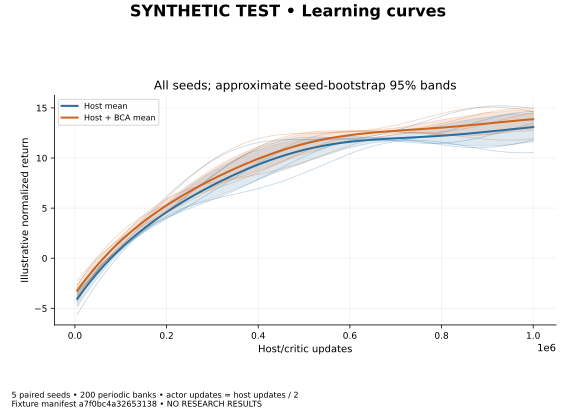
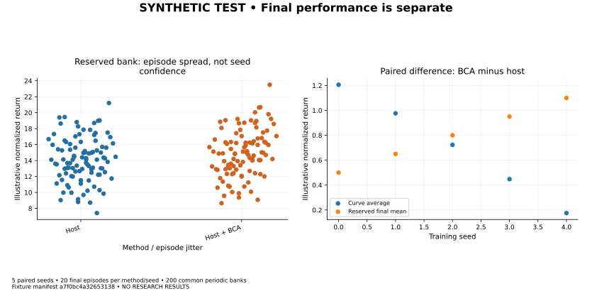
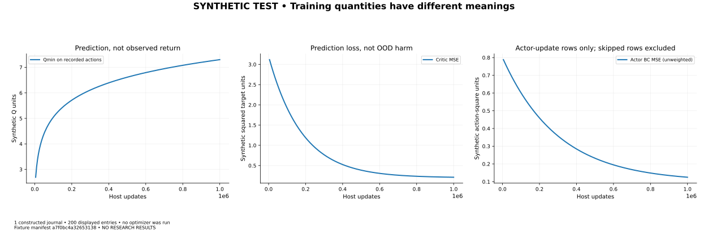
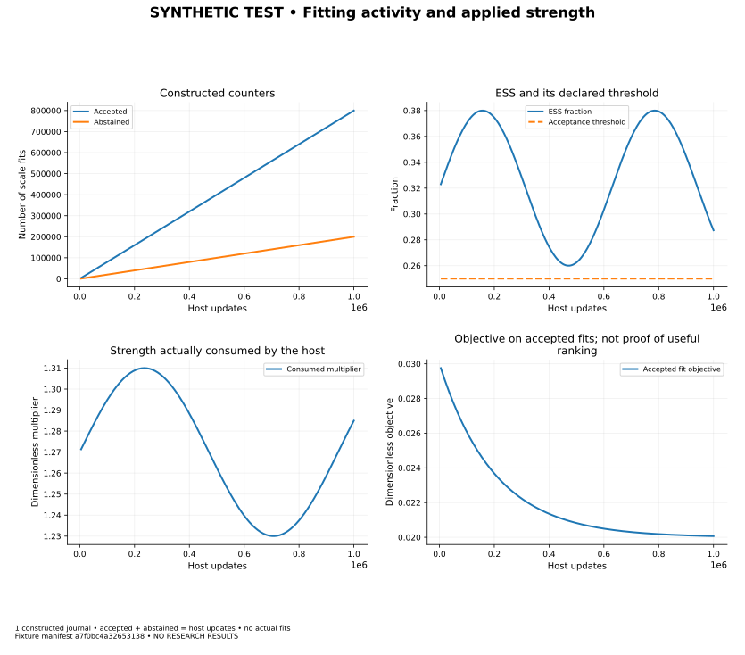
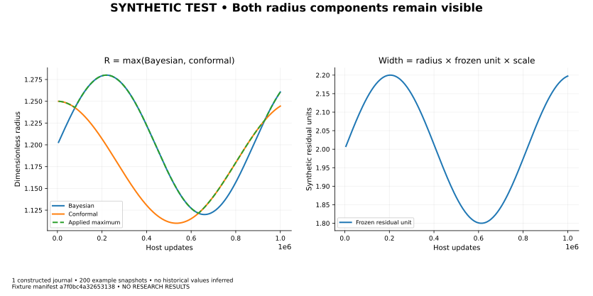
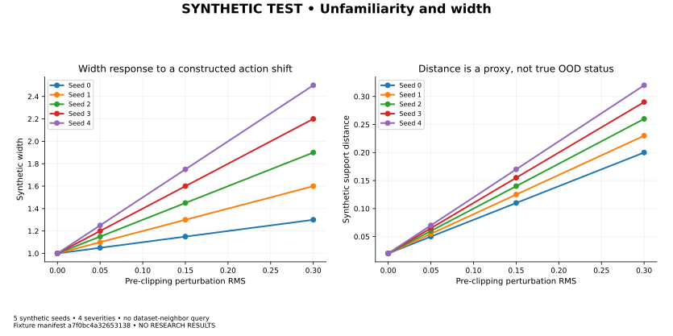
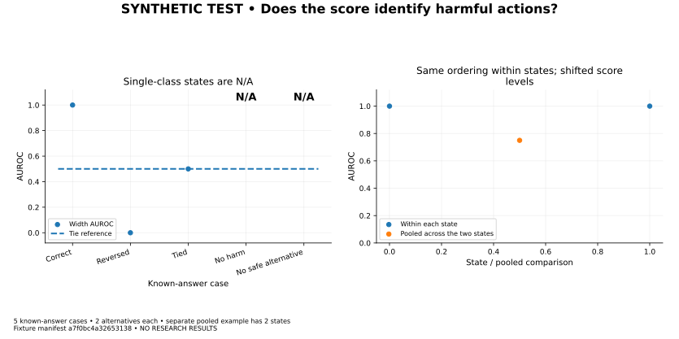
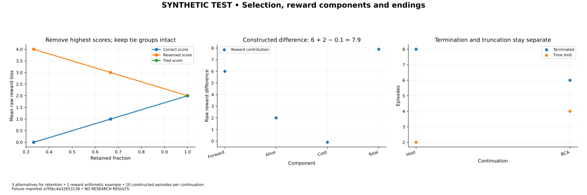
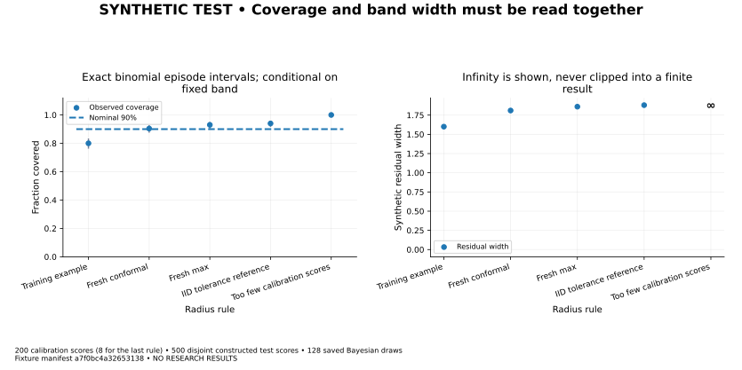
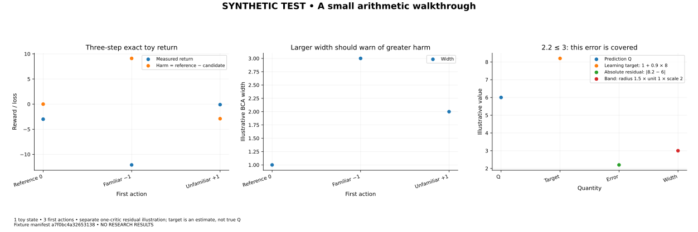

These are deliberately constructed examples. No policy was trained, checkpoint accepted or simulator run. A correct chart is evidence about our measurement tools, not evidence that BCA works.
Keep the questions separate: covering residual errors, recognizing harmful actions, and improving policy return are three different results.
Completeness and failure examples
Every intended result has a visible status. Blank results are never filled with zero.
| Status | Case | Within-state width AUROC | Meaning |
|---|---|---|---|
| COMPLETE FIXTURE | Known correct ranking | 1.00 | All four strata; 36 unique valid states per seed. |
| TIED SCORES | Constant width | 0.50 | Every harmful/nonharmful pair ties; no ranking information. |
| NO HARMFUL ACTIONS | No valid two-class states | N/A | 0 harmful alternatives. This is not a safety claim. |
| SPARSE | One state and missing strata | 1.00 available / N/A complete | One valid state per seed; withhold broad claims. |
| MISSING | Checkpoint unavailable | N/A | No outcome or metric is fabricated. |
| FAILED | Restore gate failed | N/A | Preserve the attempt; no automatic outcome retry. |
Ten figures, each with its original numeric CSV and PNG/SVG/PDF exports. All lines are unsmoothed. The training curves and journals below are constructed examples. Numeric exports are checked automatically; browser/mobile layout requires separate review.
All figures as one PDF · Fixture identity · Calculation readout · Exact inputs · Verification receipt
Manifesta7f0bc4a32653138ef207489e0b56d2d9c1162cb4b331ffb1a429d9bb0fa4b2dLearning curves
5 paired seeds • 200 periodic banks • actor updates = host updates / 2

PNG · SVG · PDF · CSV · Scroll a wide chart or open SVG for full size.


Final performance is separate
5 paired seeds • 20 final episodes per method/seed • 200 common periodic banks

PNG · SVG · PDF · CSV · Scroll a wide chart or open SVG for full size.


Training quantities have different meanings
1 constructed journal • 200 displayed entries • no optimizer was run

PNG · SVG · PDF · CSV · Scroll a wide chart or open SVG for full size.


Fitting activity and applied strength
1 constructed journal • accepted + abstained = host updates • no actual fits

PNG · SVG · PDF · CSV · Scroll a wide chart or open SVG for full size.


Both radius components remain visible
1 constructed journal • 200 example snapshots • no historical values inferred

PNG · SVG · PDF · CSV · Scroll a wide chart or open SVG for full size.


Unfamiliarity and width
5 synthetic seeds • 4 severities • no dataset-neighbor query

PNG · SVG · PDF · CSV · Scroll a wide chart or open SVG for full size.


Does the score identify harmful actions?
5 known-answer cases • 2 alternatives each • separate pooled example has 2 states

PNG · SVG · PDF · CSV · Scroll a wide chart or open SVG for full size.


Selection, reward components and endings
3 alternatives for retention • 1 reward arithmetic example • 10 constructed episodes per continuation

PNG · SVG · PDF · CSV · Scroll a wide chart or open SVG for full size.


Coverage and band width must be read together
200 calibration scores (8 for the last rule) • 500 disjoint constructed test scores • 128 saved Bayesian draws

PNG · SVG · PDF · CSV · Scroll a wide chart or open SVG for full size.


A small arithmetic walkthrough
1 toy state • 3 first actions • separate one-critic residual illustration; target is an estimate, not true Q

PNG · SVG · PDF · CSV · Scroll a wide chart or open SVG for full size.